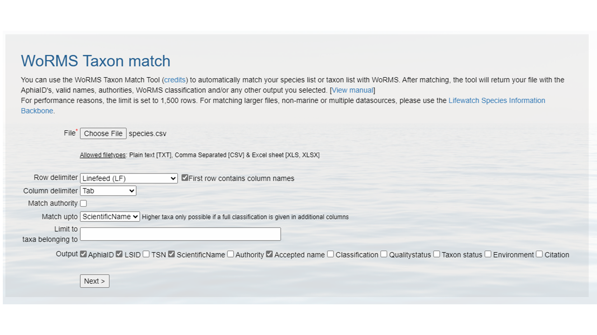
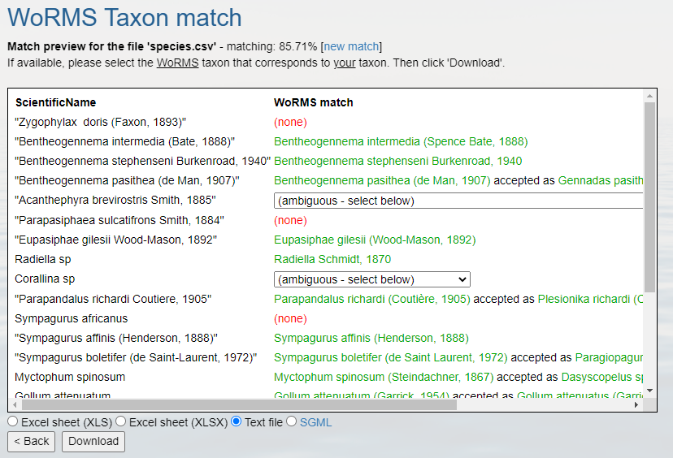

Content from Introduction to Darwin Core
Last updated on 2025-11-02 | Edit this page
Overview
Questions
- What is Darwin Core?
- What is a Darwin Core Archive?
- Why do people use Darwin Core for their data?
- What are the required Darwin Core terms for sharing to OBIS?
Objectives
- Understand the purpose of Darwin Core.
- Understand how to map data to Darwin Core.
- Plan for mapping to Darwin Core.
Darwin Core - A global community of data sharing and integration
Darwin Core is a data standard to mobilize and share biodiversity data. Over the years, the Darwin Core standard has expanded to enable exchange and sharing of diverse types of biological observations from citizen scientists, ecological monitoring, eDNA, animal telemetry, taxonomic treatments, and many others.
Demonstrated Use of Darwin Core
The power of Darwin Core is most evident in the data aggregators that harvest data using that standard. The one we will refer to most frequently in this workshop is the Ocean Biodiversity Information System (learn more about OBIS). Another prominent one is the Global Biodiversity Information Facility (learn more about GBIF). It’s also used by the Atlas of Living Australia, iDigBio, among others.
Darwin Core Archives
Darwin Core Archives are what OBIS and GBIF harvest into their systems. Fortunately the software created and maintained by GBIF, the Integrated Publishing Toolkit, produces Darwin Core Archives for us. Darwin Core Archives are pretty simple. It’s a zipped folder containing the data (one or several files depending on how many extensions you use), an Ecological Metadata Language (EML) XML file, and a meta.xml file that describes what’s in the zipped folder.
 Image
credit: Elizabeth Lawrence
Image
credit: Elizabeth Lawrence
Challenge
Download this Darwin Core Archive and examine what’s in it. Did you find anything unusual or that you don’t understand what it is?
dwca-tpwd_harc_texasaransasbay_bagseine-v2.3
|-- eml.xml
|-- event.txt
|-- extendedmeasurementorfact.txt
|-- meta.xml
`-- occurrence.txtDarwin Core Mapping
Now that we understand a bit more about why Darwin Core was created and how it is used today we can begin the work of mapping data to the standard. The key resource when mapping data to Darwin Core is the Darwin Core Quick Reference Guide. This document provides an easy-to-read reference of the currently recommended terms for the Darwin Core standard. There are a lot of terms there and you won’t use them all for every dataset (or even use them all on any dataset) but as you apply the standard to more datasets you’ll become more familiar with the terms.
üìå Tip
If your column headers are Darwin Core terms verbatim then you can skip this step! Next time you plan data collection use the standard DwC term headers!
Challenge
Find the matching Darwin Core term for these column headers.
- SAMPLE_DATE (example data: 09-MAR-21 05.45.00.000000000 PM)
- lat (example data: 32.6560)
- depth_m (example data: 6 meters)
- COMMON_NAME (example data: staghorn coral)
- percent_cover (example data: 15)
- COUNT (example data: 2 Females)
eventDatedecimalLatitude-
minimumDepthInMetersandmaximumDepthInMeters vernacularName-
organismQuantityandorganismQuantityType - This one is tricky- it’s two terms combined and will need to be
split.
individualCountandsex
üìå Tip
To make the mapping step easier on yourself, we recommend starting a mapping document/spreadsheet (or document it as a comment in your script). List out all of your column headers in one column and document the appropriate Dawin Core term(s) in a second column. For example:
| my term | DwC term |
|---|---|
| lat | decimalLatitude |
| date | eventDate |
| species | scientificName |
What are the required Darwin Core terms for publishing to OBIS?
When doing your mapping some required information may be missing. Below are the Darwin Core terms that are required to share your data to OBIS plus a few that are needed for GBIF. The ones with asterisks aren‚Äôt technically required, but we‚Äôll give you the stink-eye if you don‚Äôt include them üòê.
occurrenceIDbasisOfRecordscientificName-
scientificNameID* eventDatedecimalLatitudedecimalLongitudeoccurrenceStatus-
countryCode* -
kingdom* -
geodeticDatum*
Expand the section below to see these terms in more detail.
| Darwin Core Term | Definition | Comment | Example |
|---|---|---|---|
occurrenceID |
An identifier for the Occurrence (as opposed to a particular digital record of the occurrence). In the absence of a persistent global unique identifier, construct one from a combination of identifiers in the record that will most closely make the occurrenceID globally unique. | To construct a globally unique identifier for each occurrence you can usually concatenate station + date + scientific name (or something similar) but you’ll need to check this is unique for each row in your data. It is preferred to use the fields that are least likely to change in the future for this. For ways to check the uniqueness of your occurrenceIDs see the QA / QC section of the workshop. | Station_95_Date_09JAN1997:14:35:00.000_Atractosteus_spatula |
basisOfRecord |
The specific nature of the data record. | Pick from these controlled vocabulary terms: HumanObservation, MachineObservation, MaterialSample, PreservedSpecimen, LivingSpecimen, FossilSpecimen, MaterialEntity, Event, Taxon, Occurrence, MaterialCitation | HumanObservation |
scientificName |
The full scientific name, with authorship and date information if
known. When forming part of an Identification, this should be the name
in lowest level taxonomic rank that can be determined. This term should
not contain identification qualifications, which should instead be
supplied in the identificationQualifier term. |
Note that cf., aff., etc. need to be parsed out to the
identificationQualifier term. For a more thorough review of
identificationQualifier see this paper. |
Atractosteus spatula |
scientificNameID |
An identifier for the nomenclatural (not taxonomic) details of a scientific name. | Must be a WoRMS LSID for sharing to OBIS. Note that the numbers at the end are the AphiaID from WoRMS. | urn:lsid:marinespecies.org:taxname:218214 |
eventDate |
The date-time or interval during which an Event occurred. For occurrences, this is the date-time when the event was recorded. Not suitable for a time in a geological context. | Must follow ISO 8601. See more information on dates in the Data Cleaning section of the workshop. | 2009-02-20T08:40Z |
decimalLatitude |
The geographic latitude (in decimal degrees, using the spatial reference system given in geodeticDatum) of the geographic center of a Location. Positive values are north of the Equator, negative values are south of it. Legal values lie between -90 and 90, inclusive. | For OBIS and GBIF the required geodeticDatum is WGS84.
Uncertainty around the geographic center of a Location (e.g. when
sampling event was a transect) can be recorded in
coordinateUncertaintyInMeters. See more information on
coordinates in the Data
Cleaning section of the workshop. |
-41.0983423 |
decimalLongitude |
The geographic longitude (in decimal degrees, using the spatial reference system given in geodeticDatum) of the geographic center of a Location. Positive values are east of the Greenwich Meridian, negative values are west of it. Legal values lie between -180 and 180, inclusive | For OBIS and GBIF the required geodeticDatum is WGS84.
See more information on coordinates in the Data
Cleaning section of the workshop. |
-121.1761111 |
occurrenceStatus |
A statement about the presence or absence of a Taxon at a Location. | For OBIS, only valid values are present and
absent. |
present |
countryCode |
The standard code for the country in which the location occurs. | Use an ISO 3166-1-alpha-2 country code. Not required for OBIS but GBIF prefers to have this for their system. For international waters, leave blank. | US, MX, CA |
kingdom |
The full scientific name of the kingdom in which the taxon is classified. | Not required for OBIS but GBIF needs this to disambiguate scientific names that are the same but in different kingdoms. | Animalia |
geodeticDatum |
The ellipsoid, geodetic datum, or spatial reference system (SRS) upon which the geographic coordinates given in decimalLatitude and decimalLongitude as based. | Must be WGS84 for data shared to OBIS and GBIF but it’s best to state explicitly that it is. | WGS84 |
What other terms should be considered?
While these terms are not required for publishing data to OBIS, they
are extremely helpful for downstream users because without them the data
are less useful for future analyses. For instance, depth is
a crucial piece of information for marine observations, but it is not
always included. For the most part the ones listed below are not going
to be sitting there in the data, so you’ll have to determine what the
values should be and add them in. Really try your hardest to include
them if you can.
| Darwin Core Term | Definition | Comment | Example |
|---|---|---|---|
minimumDepthInMeters |
The lesser depth of a range of depth below the local surface, in meters. | There isn’t a single depth value so even if you have a single value you’ll put that in both minimum and maximum depth fields. | 0.1 |
maximumDepthInMeters |
The greater depth of a range of depth below the local surface, in meters. | For observations above sea level consider using minimumDistanceAboveSurfaceInMeters
and maximumDistanceAboveSurfaceInMeters
|
10.5 |
coordinateUncertaintyInMeters |
The horizontal distance (in meters) from the given decimalLatitude and decimalLongitude describing the smallest circle containing the whole of the Location. Leave the value empty if the uncertainty is unknown, cannot be estimated, or is not applicable (because there are no coordinates). Zero is not a valid value for this term | There’s always uncertainty associated with locations. Recording the uncertainty is crucial for downstream analyses. | 15 |
samplingProtocol |
The names of, references to, or descriptions of the methods or protocols used during an Event. | Bag Seine | |
taxonRank |
The taxonomic rank of the most specific name in the scientificName. | Also helps with disambiguation of scientific names. | Species |
organismQuantity |
A number or enumeration value for the quantity of organisms. | OBIS also likes to see this in the Extended Measurement or Fact extension. | 2.6 |
organismQuantityType |
The type of quantification system used for the quantity of organisms. | Relative Abundance | |
datasetName |
The name identifying the data set from which the record was derived. | TPWD HARC Texas Coastal Fisheries Aransas Bag Bay Seine | |
dataGeneralizations |
Actions taken to make the shared data less specific or complete than in its original form. Suggests that alternative data of higher quality may be available on request. | This veers somewhat into the realm of metadata and will not be applicable to all datasets but if the data were modified such as due to sensitive species then it’s important to note that for future users. | Coordinates generalized from original GPS coordinates to the nearest half degree grid cell |
informationWithheld |
Additional information that exists, but that has not been shared in the given record. | Also useful if the data have been modified this way for sensitive species or for other reasons. | location information not given for endangered species |
institutionCode |
The name (or acronym) in use by the institution having custody of the object(s) or information referred to in the record. | TPWD |
Other than these specific terms, work through the data that you have and try to crosswalk it to the Darwin Core terms that match best.
Exercise
Create some crosswalk notes for your dataset.
Compare your data files to the table(s) above to devise a plan to crosswalk your data columns into the DwC terms.
- Darwin Core isn’t difficult to apply, it just takes a little bit of time.
- Using Darwin Core allows datasets from across projects, organizations, and countries to be integrated together.
- Applying certain general principles to the data will make it easier to map to Darwin Core.
- Implementing Darwin Core makes data FAIR-er and means becoming part of a community of people working together to understand species no matter where they work or are based.
Content from Social Break
Last updated on 2025-02-28 | Edit this page
 Image credit: xkcd
Image credit: xkcd
Content from Data Cleaning
Last updated on 2025-11-02 | Edit this page
Overview
Questions
- How to convert dates to ISO?
- How to match scientific names to WoRMS?
- How to convert latitudes and longitudes to decimal degrees?
Objectives
- Aligning dates to the ISO 8601 standard.
- Matching scientific names to WoRMS.
- Converting latitude and longitude variations to decimal degrees North and East.
Now that you know what the mapping is between your raw data and the Darwin Core standard, it’s time to start cleaning up the data to align with the conventions described in the standard. The following activities are the three most common conversions a dataset will undergo to align to the Darwin Core standard:
- Ensuring dates follow the ISO 8601 standard
- Matching scientific names to an authoritative resource
- Ensuring latitude and longitude values are in decimal degrees
Below is a short summary of each of those conversions as well as some example conversion scripts. The exercises are intended to give you a sense of the variability we’ve seen in datasets and how we went about converting them. While the examples use the pandas package for Python and the tidyverse collection of packages for R (in particular the lubridate package), those are not the only options for dealing with these conversions but simply the ones we use more frequently in our experiences.
Getting your dates in order
Dates can be surprisingly tricky because people record them in many
different ways. For our purposes we must follow ISO 8601 which means
using a four digit year, two digit month, and two digit day with dashes
as separators (i.e. YYYY-MM-DD). You can also record time
in ISO 8601 but make sure to include the time zone which can also get
tricky if your data take place across time zones and throughout the year
where daylight savings time may or may not be in effect (and start and
end times of daylight savings vary across years). There are packages in
R and Python that can help you with these vagaries. Finally, it is
possible to record time intervals in ISO 8601 using a slash
(e.g. 2022-01-02/2022-01-12). Examine the dates in your
data to determine what amendments need to be made to ensure they are
following ISO 8601. Below are some examples and solutions in Python and
R for them.
ISO 8601 dates can represent moments in time at different resolutions, as well as time intervals, which use “/” as a separator. Date and time are separated by “T”. Timestamps can have a time zone indicator at the end. If not, then they are assumed to be local time. When a time is UTC, the letter “Z” is added at the end (e.g. 2009-02-20T08:40Z, which is the equivalent of 2009-02-20T08:40+00:00).
üìå Tip
Focus on getting your package of choice to read the dates appropriately. While you can use regular expressions to replace and substitute strings to align with the ISO convention, it will typically save you time if you work in your package of choice to translate the dates.
| Darwin Core Term | Description | Example |
|---|---|---|
| eventDate | The date-time or interval during which an Event occurred, or a taxa was recorded or observed. Not suitable for a time in a geological context. |
1963-03-08T14:07-0600 (8 Mar 1963 at 2:07pm in the time
zone six hours earlier than UTC).2009-02-20T08:40Z (20
February 2009 8:40am UTC).2018-08-29T15:19 (3:19pm
local time on 29 August 2018).1809-02-12 (some time
during 12 February
1809).2007-03-01T13:00:00Z/2008-05-11T15:30:00Z (some
time during the interval between 1 March 2007 1pm UTC and 11 May 2008
3:30pm UTC). |
Examples
Below are a few examples in R and Python for converting commonly represented dates to ISO 8601.
üìå Tip
When all else fails, treat the dates as strings and use substitutions/regular expressions to manipulate the strings into ISO 8601.
Matching your scientific names to WoRMS
OBIS uses the World Register
of Marine Species (WoRMS) as the taxonomic backbone for its system.
GBIF uses the Catalog of
Life. Since WoRMS contributes to the Catalog of Life and WoRMS is a
requirement for OBIS we will teach you how to do your taxonomic lookups
using WoRMS. The key Darwin Core terms that we need from WoRMS are
scientificNameID, also known as the WoRMS LSID, which looks
something like this
"urn:lsid:marinespecies.org:taxname:105838", and
kingdom. But you can grab the other parts of the taxonomic
hierarchy such as taxonRank.
There are two ways to grab the taxonomic information necessary. First, you can use the WoRMS Taxon Match Tool. The tool accepts lists of scientific names (each unique name as a separate row in a .txt, .csv, or .xlsx file) up to 1500 names and provides an interface for selecting the match you want for ambiguous matches. A brief walk-through using the service is included in the challenge box below. A more detailed step-by-step guide on using the WoRMS Taxon Match Tool for the MBON Pole to Pole can be found here. Additionally, OBIS has a three-part video series on YouTube about using the tool.
The other way to get the taxonomic information you need is to use worrms (yes there are two r’s in the package name) or pyworms.
| Darwin Core Term | Description | Example |
|---|---|---|
| scientificNameID | An identifier for the nomenclatural (not taxonomic) details of a scientific name. | urn:lsid:ipni.org:names:37829-1:1.3 |
| kingdom | The full scientific name of the kingdom in which the taxon is classified. |
Animalia, Archaea, Bacteria,
Chromista, Fungi, Plantae,
Protozoa, Viruses
|
| taxonRank | The taxonomic rank of the most specific name in the scientificName. |
subspecies, varietas, forma,
species, genus
|
Examples
Below are a few example tools that can be used to match scientific names to WoRMS.
Create a CSV (comma separated value) file with the scientific name of
the species of interest. Here we are showing some of the contents of the
file species.csv.
Upload that file to the WoRMS Taxon match service
- make sure the option LSID is checked
- for the example file, make sure you select LineFeed as the row delimiter and Tab as the column delimiter 
Identify which columns to match to which WoRMS term. 
Click Match
Hopefully, a WoRMS exact match will return
- In some cases you will have ambiguous matches. Resolve these rows by using the pull down menu to select the appropriate match.
- Non-matched taxa will appear in red. You will have to go back to
your source file and determine what the appropriate text should
be.

Download the response as an XLS, XLSX, or text file and use the
information when building the Darwin Core file(s). The response from the
example linked above can be found here. A screenshot of the file can
be seen below: 
-
Create a CSV (comma separated value) file with the scientific name of the species of interest. Here we are showing some of the contents of the file
species.csv.screenshot -
Upload that file to the WoRMS Taxon match service
- make sure the option LSID is checked
- for the example file, make sure you select LineFeed as the row delimiter and Tab as the column delimiter
Identify which columns to match to which WoRMS term.
Click
Match-
Hopefully, a WoRMS exact match will return
- In some cases you will have ambiguous matches. Resolve these rows by using the pull down menu to select the appropriate match.
- Non-matched taxa will appear in red. You will have to go back to
your source file and determine what the appropriate text should
be.
Download the response as an XLS, XLSX, or text file and use the information when building the Darwin Core file(s). The response from the example linked above can be found here. A screenshot of the file can be seen below:
Getting lat/lon to decimal degrees
Latitude (decimalLatitude) and longitude
(decimalLongitude) are the geographic coordinates (in
decimal degrees north and east, respectively), using the spatial
reference system given in geodeticDatum of the geographic
center of a location.
-
decimalLatitude, positive values are north of the Equator, negative values are south of it. All values lie between -90 and 90, inclusive. -
decimalLongitude, positive values are east of the Greenwich Meridian, negative values are west of it. All values lie between -180 and 180, inclusive.
Note, that the requirement for decimalLatitude and
decimallLongitude is they must be in decimal degrees in WGS84.
Since this is the requirement for Darwin Core, OBIS and GBIF
will assume data shared using those Darwin Core terms are in the
geodetic datum WGS84. We highly recommend checking
the coordinate reference system (CRS) of your observations to confirm
they are using the same datum and documenting it in the
geodeticDatum Darwin Core term. If your coordinates are not
using WGS84, they will need to be converted in order to
share the data to OBIS and GBIF since decimalLatitude and
decimalLongitude are required terms.
Helpful packages for managing CRS and geodetic datum: * python: GeoPandas has a utility. * R: terra and sf.
If at all possible, it’s best to extract out the components of the
information you have in order to compile the appropriate field. For
example, if you have the coordinates as one lone string
17° 51' 57.96" S 149° 39' 13.32" W, try to split it out
into its component pieces: 17, 51,
57.96, S, 149, 39,
13.32, and W just be sure to track which
values are latitude and which are longitude.
| Darwin Core Term | Description | Example |
|---|---|---|
| decimalLatitude | The geographic latitude (in decimal degrees, using the spatial reference system given in geodeticDatum) of the geographic center of a Location. | -41.0983423 |
| decimalLongitude | The geographic longitude (in decimal degrees, using the spatial reference system given in geodeticDatum) of the geographic center of a Location. | -121.1761111 |
| geodeticDatum | The ellipsoid, geodetic datum, or coordinate reference system (CRS) upon which the geographic coordinates given in decimalLatitude and decimalLongitude as based. | WGS84 |
 Image credit: xkcd
Image credit: xkcd
Examples
Below are a few examples in R and Python to convert some common coordinate pairs.
- When doing conversions it’s best to break out your data into it’s component pieces.
- Dates are messy to deal with. Some packages provide easy solutions, otherwise use regular expressions to align date strings to ISO 8601.
- WoRMS LSIDs are a requirement for OBIS.
- Latitude and longitudes are like dates, they can be messy to deal with, so take a similar approach. They have to be in decimal degrees.
Content from Darwin Core and Extension Schemas
Last updated on 2025-11-02 | Edit this page
Overview
Questions
- What is a core and what is an extension in Darwin Core?
- What is the OBIS-ENV-DATA schema?
- How do I create Darwin Core files?
Objectives
- Creating IDs.
- Creating event file, occurrence file, eMOF file.
Darwin Core - Cores and Extensions
Now that we have a firm basis for understanding the different terms in Darwin Core the next part to understand is how data tables are organized and the difference between cores and extensions. You will always have a core table (Occurrence core or Event core) with either no extensions or several. What you choose depends on the data you have and how to represent it best. The original Darwin Core core is the Occurrence core. Once people started using that core they began to see that they needed extensions to that core to best represent the data they were trying to share and therefore several extensions have been developed (and are continuing to be developed). As more monitoring data has been shared over time, another core type called Event core was added. Without getting too far into the weeds on the cores and extensions, what’s most important to understand is that you need to pick your core type and once you do that then you pick the extensions to go with it. For example, if your data took place as part of an event (cruise, transects, etc) you will pick Event core. If there was no sampling event, then you will pick Occurrence core.
What are Events and Occurrences?
Darwin Core is applicable to any observation of an organism
(scientific name, OTU, or other methods of defining a species) at a
particular place and time. In Darwin Core this is an
occurrence. It is the visual or digitally recorded
observation of an organism. An event refers to field
sampling event (i.e., transect, cruise, plankton tow) through which
these observations were made. The event information captures details
about when, where, and how the biodiversity observation occurred,
whereas the occurrence captures details on the taxon
observed (species, lifestage, sex). To learn more about the foundations
of Darwin Core read Wieczorek et
al. 2012.
Different options for sharing the data
The bare minimum for sharing data to OBIS is to use the Occurrence Core with no extensions. This core type covers datasets that only include observations and/or specimen records where no information on sampling is available.
The Occurrence core allows you to provide all the required Darwin Core terms detailed in the intro section. You can produce a fully compliant Darwin Core version of your data using only the Occurrence core (see this example by Tylar Murray). On one hand, if the data were collected using some kind of sampling methodology, you will lose much of that information if you use this most simple form of data structuring. However, it is faster and easier to produce.
Thought Experiment
Look at the minimum required fields example. What is possible to do in future reuse? What would not be possible? For instance, note that there is no information about depth or the uncertainty of the coordinates.
For more examples check out the Datasets folder in the IOOS Bio Data Guide.
Occurrence Core + extensions
Using the Occurrence core plus relevant extensions means that you can capture more of the data that’s been recorded. Let’s consider a museum dataset that has biological measurements for each individual specimen (e.g. length). All information about each organism’s occurrence (taxonomic information, locality, identification, etc.) will go into the Occurrence core. You can then capture the biotic measurement information (type of measurement, units, accuracy, etc.) by using either the Measurement or Facts extension, or the Extended Measurement or Fact extension (we elaborate on this extension below). Note again here we do not have information on how the organisms were sampled.
Event Core with Extended Measurement or Fact extension
As we have indicated earlier, the Event core is for datasets that include known sampling events - details are known about how, when, and where samples were taken.
An innovation that OBIS made was introducing the Extended Measurement or Fact extension (also sometimes referred to as OBIS-ENV-DATA, or eMoF). This uses the Event core with an Occurrence extension + the extended Measurement or Fact extension. The eMoF extension makes it possible to include measurements for both the events (salinity, temperature, gear type, etc.) and the occurrences (weight, length, etc.). Prior to this you were only able to include measurements of the occurrence (in the Measurement or Facts extension).
It is important to know that the structure of the eMoF table is likely quite a bit different than how the original data are recorded in your dataset. Rather than documenting each measurement in separate columns, measurements will be:
- condensed into one column:
measurementValue(e.g. 15) -
measurementTypeis populated with free text describing what the measurement actually is (e.g. length) -
measurementUnitis used to indicate the unit of the measurement (e.g. cm).
The unconstrained nature of measurementType allows for
flexibility in describing measurements, which can be quite useful. But
what if you wanted to obtain all OBIS records that have “length”
measurements? Due to the inevitable heterogeneity in how different
people document “length”, you would have to try to account for all these
different ways! Fortunately the eMoF table can get around this challenge
by providing a way to include Unique Resource Identifiers (URIs). These
URIs are used to populate the measurementTypeID field, as
well as measurementUnitID and
measurementValueID. More details about these URIs and how
to populate them are covered in the Controlled Vocabulary section.
What’s in an ID?
IDs are the keys in your data that are used to link tables together.
For example, an occurenceID in the eMoF table records
information about an organism with the same occurrenceID
within the Occurrence table. IDs are also the keys that keep track of
each of the records, so that if you notice a mistake or missing
information you can keep the record in place in the global aggregators
and fix the mistake or add the missing information. For instance, let’s
say you have a record with an occurrenceID
Station_95_Date_09JAN1997:14:35:00.000_Atractosteus_spatula
and after it’s published to OBIS you notice that the latitude was
recorded incorrectly. When you fix that record in the data you would
keep the occurrenceID
Station_95_Date_09JAN1997:14:35:00.000_Atractosteus_spatula,
fix the latitude, and republish the data so that the record is still
present in OBIS but you have fixed the mistake.
| Darwin Core Term | Description | Example |
|---|---|---|
| eventID | An identifier for the set of information associated with an Event (something that occurs at a place and time). May be a global unique identifier or an identifier specific to the data set. |
INBO:VIS:Ev:00009375Station_95_Date_09JAN1997:14:35:00.000
FFS-216:2007-09-21:A:replicateID1024
|
| occurrenceID | An identifier for the Occurrence (as opposed to a particular digital record of the occurrence). In the absence of a persistent global unique identifier, construct one from a combination of identifiers in the record that will most closely make the occurrenceID globally unique. |
urn:catalog:UWBM:Bird:89776 Station_95_Date_09JAN1997:14:35:00.000_Atractosteus_spatula
FFS-216:2007-09-21:A:replicateID1024:objectID1345330
|
| measurementID | An identifier for the MeasurementOrFact (information pertaining to measurements, facts, characteristics, or assertions). May be a global unique identifier or an identifier specific to the data set. | 9c752d22-b09a-11e8-96f8-529269fb1459 |
With that in mind, what is the best way to create an
eventID, occurrenceID, or
measurementID? Until we have a system that mints Persistent
Identififers for individual records then the best way we have seen is to
build the ID from information in the data itself. That way if you need
to update or fix a record you simply use the same information again to
build the same ID for the same record. Take our example above
Station_95_Date_09JAN1997:14:35:00.000_Atractosteus_spatula.
This is a concatenation of information from the original source data,
including the Station number + Verbatim Date + Scientific name. Because
this is unique for each row in the occurrence file, and we have kept the
original data in its original format we can always rebuild this ID by
concatenating this same information together again.
It is very important that these IDs do not change over time. So if an ID for a museum specimen is built from e.g. the institution the specimen is being held at, but then the specimen changes institutions - its ID should not change to reflect the move. If the ID changes then the record will be duplicated in the global database and record information could be lost over time!

The Darwin Core file structure, demonstrating how an Event core table can be connected to extension tables through the use of identifiers. Image credit: OBIS
Required Terms
The core and extension data tables have required terms. Explore the required terms of each data table below.
| Darwin Core Term | Definition | Comment | Example |
|---|---|---|---|
eventID |
An identifier for the set of information associated with an Event (something that occurs at a place and time). May be a global unique identifier or an identifier specific to the data set. | To construct a globally unique identifier for each event (tow, quadrat, station, transect, etc) you can usually concatenate station + date but you’ll need to check this is unique for each row in your data. |
INBO:VIS:Ev:00009375Station_95_Date_09JAN1997:14:35:00.000
FFS-216:2007-09-21:A:replicateID1024
|
eventDate |
The date-time or interval during which an Event occurred. For occurrences, this is the date-time when the event was recorded. Not suitable for a time in a geological context. | Must follow ISO 8601. See more information on dates in the Data Cleaning section of the workshop. | 2009-02-20T08:40Z |
decimalLatitude |
The geographic latitude (in decimal degrees, using the spatial reference system given in geodeticDatum) of the geographic center of a Location. Positive values are north of the Equator, negative values are south of it. Legal values lie between -90 and 90, inclusive. | For OBIS and GBIF the required geodeticDatum is WGS84.
Uncertainty around the geographic center of a Location (e.g. when
sampling event was a transect) can be recorded in
coordinateUncertaintyInMeters. See more information on
coordinates in the Data
Cleaning section of the workshop. |
-41.0983423 |
decimalLongitude |
The geographic longitude (in decimal degrees, using the spatial reference system given in geodeticDatum) of the geographic center of a Location. Positive values are east of the Greenwich Meridian, negative values are west of it. Legal values lie between -180 and 180, inclusive | For OBIS and GBIF the required geodeticDatum is WGS84.
See more information on coordinates in the Data Cleaning section of the
workshop. |
-121.1761111 |
countryCode |
The standard code for the country in which the location occurs. | Use an ISO 3166-1-alpha-2 country code. Not required for OBIS but GBIF needs this for their system. | US |
geodeticDatum |
The ellipsoid, geodetic datum, or spatial reference system (SRS) upon which the geographic coordinates given in decimalLatitude and decimalLongitude as based. | Must be WGS84 for data shared to OBIS and GBIF but it’s best to state explicitly that it is. | WGS84 |
| Darwin Core Term | Definition | Comment | Example |
|---|---|---|---|
eventID |
An identifier for the set of information associated with an Event (something that occurs at a place and time). May be a global unique identifier or an identifier specific to the data set. | This will be constructed in the event core but you need to reference it here in the occurrence extension so the files can link to each other correctly. |
INBO:VIS:Ev:00009375Station_95_Date_09JAN1997:14:35:00.000
FFS-216:2007-09-21:A:replicateID1024
|
occurrenceID |
An identifier for the Occurrence (as opposed to a particular digital record of the occurrence). In the absence of a persistent global unique identifier, construct one from a combination of identifiers in the record that will most closely make the occurrenceID globally unique. | To construct a globally unique identifier for each occurrence you can usually concatenate station + date + scientific name (or something similar) but you’ll need to check this is unique for each row in your data. | Station_95_Date_09JAN1997:14:35:00.000_Atractosteus_spatula |
basisOfRecord |
The specific nature of the data record. | Pick from these controlled vocabulary terms: HumanObservation, MachineObservation, PreservedSpecimen, LivingSpecimen, FossilSpecimen, MaterialSample, Occurrence, MaterialCitation | HumanObservation |
scientificName |
The full scientific name, with authorship and date information if
known. When forming part of an Identification, this should be the name
in lowest level taxonomic rank that can be determined. This term should
not contain identification qualifications, which should instead be
supplied in the identificationQualifier term. |
Note that cf., aff., etc. need to be parsed out to the
identificationQualifier term. |
Atractosteus spatula |
scientificNameID |
An identifier for the nomenclatural (not taxonomic) details of a scientific name. | Must be a WoRMS LSID for sharing to OBIS. Note that the numbers at the end are the AphiaID from WoRMS. | urn:lsid:marinespecies.org:taxname:218214 |
kingdom |
The full scientific name of the kingdom in which the taxon is classified. | Not required for OBIS but GBIF needs this to disambiguate scientific names that are the same but in different kingdoms. | Animalia |
occurrenceStatus |
A statement about the presence or absence of a Taxon at a Location. | For OBIS, only valid values are present and
absent. |
present |
Nothing is required from the OBIS perspective but if you are
using this extension then eventID is required to be able to
link the extension back to the Event core. You can also use
occurrenceID to link to occurrence records in the
Occurrence core or extension. See here
for all potential fields in the extension and what goes in them. See
below of the most relevant terms to be included in the eMoF table.
| Darwin Core Term | Definition | Comment | Example |
|---|---|---|---|
eventID |
An identifier for the set of information associated with an Event (something that occurs at a place and time). May be a global unique identifier or an identifier specific to the data set. | This will be constructed in the Event core but you need to reference it here in the extension so the files can link to each other correctly. |
INBO:VIS:Ev:00009375Station_95_Date_09JAN1997:14:35:00.000
FFS-216:2007-09-21:A:replicateID1024
|
occurrenceID |
The identifier of the occurrence the measurement or fact refers to. If not applicable, it should be left empty. | Only needed if you have measurements that you need to link back to an occurrence like weight, length, abundance, etc. |
urn:catalog:UWBM:Bird:89776 Station_95_Date_09JAN1997:14:35:00.000_Atractosteus_spatula
FFS-216:2007-09-21:A:replicateID1024:objectID1345330
|
measurementID |
An identifier for the MeasurementOrFact (information pertaining to measurements, facts, characteristics, or assertions). May be a global unique identifier or an identifier specific to the data set. | This is not necessarily required when creating the eMoF but it can be useful, especially if you would like a way to identify a specific measurement in the data | 9c752d22-b09a-11e8-96f8-529269fb1459 |
measurementType |
The nature of the measurement, fact, characteristic, or assertion. Recommended best practice is to use a controlled vocabulary. |
temperaturesalinitylengthdevice type
|
|
measurementTypeID |
An identifier for the measurementType (global unique identifier, URI). The identifier should reference the measurementType in a vocabulary. | OBIS uses NERC to provide these but you can use other vocabularies or ontologies like ENVO or others. When using NERC vocabulary terms, you must choose a term from the P01 collection. |
http://vocab.nerc.ac.uk/collection/P01/current/TEMPPR01/http://vocab.nerc.ac.uk/collection/P01/current/ODSDM021/http://vocab.nerc.ac.uk/collection/P01/current/OBSINDLX/
` | |measurementValue| The value of the measurement, fact, characteristic, or assertion | |20<br/>61.5<br/>121<br/>Van
Veen
grab| |measurementValueID| An identifier for facts stored in the column measurementValue (global unique identifier, URI). This identifier can reference a controlled vocabulary (e.g. for sampling instrument names, methodologies, life stages) or reference a methodology paper with a DOI. When the measurementValue refers to a value and not to a fact, the **measurementvalueID has no meaning and should remain empty**. | |http://vocab.nerc.ac.uk/collection/L22/current/TOOL0653/| |measurementAccuracy| The description of the potential error associated with the measurementValue. | |0.01
C<br/>0.03<br/>5
mm| |measurementUnit| The units associated with the measurementValue. Recommended best practice is to use the International System of Units (SI). | |C<br/>PPT<br/>mm| |measurementUnitID| An identifier for the measurementUnit (global unique identifier, URI). The identifier should reference the measurementUnit in a vocabulary. | Recommended practice is populate this field with a term from NERC vocablary's P06 collection |http://vocab.nerc.ac.uk/collection/P06/current/UPAA/<br/>http://vocab.nerc.ac.uk/collection/P06/current/UPPT/<br/>http://vocab.nerc.ac.uk/collection/P06/current/UXMM/` |
Over at the IOOS Bio Data Guide repository you can see a script that was used to take data in its original form and align it to Darwin Core Event Core with Extended Measurement or Fact. More information on how to organize data fields into Event and Measurement or Fact can be found in the OBIS Manual.
*A screenshot of the script available for aligning data to Darwin Core.
- Darwin Core uses cores and extensions to model the multitude of biological observation data that exists.
- OBIS uses the Event (or Occurrence) Core with the Extended Measurement or Fact extension to make sure no information is lost.
- Additional fields are required and put into different files when using a Core with the Extended Measurement or Fact extension.
- ID fields are important keys in your data and we recommend building them from the information in your data.
Content from Social Break
Last updated on 2025-02-28 | Edit this page
 Image credit: xkcd
Image credit: xkcd
Content from QA/QC
Last updated on 2025-11-02 | Edit this page
Overview
Questions
- How can I QC my data?
Objectives
- Quality control and enhance your data
Data enhancement and quality control
OBIS performs a number of quality checks on the data it receives. Red quality flags are attached to occurrence records if errors are encountered, and records may also be rejected if they do not meet minimum requirements. The checks that OBIS performs are documented here, and those that EurOBIS also implements are published in Vandepitte et al. 2015. Therefore, prior to publishing your data to OBIS and/or GBIF, it is important to perform quality control on your standardized data. This can help identify any outliers or “faulty” data. It will also help with ensuring that your data is compatible and interoperable with other datasets published to OBIS. There are numerous functions within the obistools R packages that can serve to identify outliers, inspect quality or ensure that the dataset structure fits the required format for both the Event and Occurrence tables.
üìå Recommended initial checks on your data
- Check that all the required Darwin Core terms are present and contain the correct information.
- Make a map from your data to ensure the coordinates are valid and within your expected range.
- Run basic statistics on each column of numeric data (min, max, mean, std. dev., etc.) to identify potential issues.
- Look at unique values of columns containing string entries to identify potential issues (eg. spelling).
- Check for uniqueness of
occurrenceIDfield. - Check for uniqueness of
eventIDfor each event, if applicable. - Check that dates are following ISO 8601.
- Check that the
scientificNameIDis/are valid.
One method for reviewing your data is to use the r package Hmisc and the function describe. Expand the example below using output from this notebook to see how it works.
R
# pull in the occurrence file from https://www.sciencebase.gov/catalog/item/53a887f4e4b075096c60cfdd
url <- "https://www.sciencebase.gov/catalog/file/get/53a887f4e4b075096c60cfdd?f=__disk__32%2F24%2F80%2F322480c9bcbad19030e29c9ec5e2caeb54cb4a08&allowOpen=true"
occurrence <- read.csv(url)
head(occurrence,n=1)
vernacularName eventID occurrenceStatus
1 Alligator gar Station_95_Date_09JAN1997:14:35:00.000 Absent
basisOfRecord scientificName
1 HumanObservation Atractosteus spatula
scientificNameID kingdom phylum class
1 urn:lsid:marinespecies.org:taxname:279822 Animalia Chordata Actinopteri
order family genus scientificNameAuthorship
1 Lepisosteiformes Lepisosteidae Atractosteus (LacepA"de, 1803)
taxonRank organismQuantity organismQuantityType
1 Species 0 Relative Abundance
occurrenceID
1 Station_95_Date_09JAN1997:14:35:00.000_Atractosteus_spatula
collectionCode
1 Aransas Bay Bag Seine
Hmisc::describe(occurrence)OUTPUT
occurrence
18 Variables 334341 Observations
--------------------------------------------------------------------------------
vernacularName
n missing distinct
334341 0 61
lowest : Alligator gar Arrow shrimp Atlantic brief squid Atlantic bumper Atlantic croaker
highest: Striped mullet Thinstripe hermit Threadfin shad White mullet White shrimp
--------------------------------------------------------------------------------
eventID
n missing distinct
334341 0 5481
lowest : Station_10_Date_04DEC1991:13:59:00.000 Station_10_Date_04SEP2002:13:17:00.000 Station_10_Date_05JUN1991:15:20:00.000 Station_10_Date_07APR1995:12:54:00.000 Station_10_Date_07APR2000:11:16:00.000
highest: Station_99_Date_21APR1998:18:24:00.000 Station_99_Date_22OCT2001:13:12:00.000 Station_99_Date_25JUN1990:13:48:00.000 Station_99_Date_25NOV2003:11:11:00.000 Station_99_Date_27JUN1988:12:45:00.000
--------------------------------------------------------------------------------
occurrenceStatus
n missing distinct
334341 0 2
Value Absent Present
Frequency 294469 39872
Proportion 0.881 0.119
--------------------------------------------------------------------------------
basisOfRecord
n missing distinct value
334341 0 1 HumanObservation
Value HumanObservation
Frequency 334341
Proportion 1
--------------------------------------------------------------------------------
scientificName
n missing distinct
334341 0 61
lowest : Adinia xenica Anchoa mitchilli Archosargus probatocephalus Ariopsis felis Atractosteus spatula
highest: Stomatopoda Stomolophus meleagris Syngnathus scovelli Tozeuma carolinense Trichiurus lepturus
--------------------------------------------------------------------------------
scientificNameID
n missing distinct
334341 0 61
lowest : urn:lsid:marinespecies.org:taxname:105792 urn:lsid:marinespecies.org:taxname:107034 urn:lsid:marinespecies.org:taxname:107379 urn:lsid:marinespecies.org:taxname:126983 urn:lsid:marinespecies.org:taxname:127089
highest: urn:lsid:marinespecies.org:taxname:367528 urn:lsid:marinespecies.org:taxname:396707 urn:lsid:marinespecies.org:taxname:421784 urn:lsid:marinespecies.org:taxname:422069 urn:lsid:marinespecies.org:taxname:443955
--------------------------------------------------------------------------------
kingdom
n missing distinct value
334341 0 1 Animalia
Value Animalia
Frequency 334341
Proportion 1
--------------------------------------------------------------------------------
phylum
n missing distinct
328860 5481 4
Value Arthropoda Chordata Cnidaria Mollusca
Frequency 71253 246645 5481 5481
Proportion 0.217 0.750 0.017 0.017
--------------------------------------------------------------------------------
class
n missing distinct
328860 5481 5
lowest : Actinopteri Cephalopoda Elasmobranchii Malacostraca Scyphozoa
highest: Actinopteri Cephalopoda Elasmobranchii Malacostraca Scyphozoa
Value Actinopteri Cephalopoda Elasmobranchii Malacostraca
Frequency 235683 5481 10962 71253
Proportion 0.717 0.017 0.033 0.217
Value Scyphozoa
Frequency 5481
Proportion 0.017
--------------------------------------------------------------------------------
order
n missing distinct
328860 5481 22
lowest : Atheriniformes Batrachoidiformes Carangaria incertae sedis Carangiformes Carcharhiniformes
highest: Rhizostomeae Scombriformes Siluriformes Syngnathiformes Tetraodontiformes
--------------------------------------------------------------------------------
family
n missing distinct
328860 5481 36
lowest : Ariidae Atherinopsidae Batrachoididae Carangidae Carcharhinidae
highest: Stromateidae Syngnathidae Tetraodontidae Trichiuridae Triglidae
--------------------------------------------------------------------------------
genus
n missing distinct
328860 5481 52
lowest : Adinia Anchoa Archosargus Ariopsis Atractosteus
highest: Sphoeroides Stomolophus Syngnathus Tozeuma Trichiurus
--------------------------------------------------------------------------------
scientificNameAuthorship
n missing distinct
328860 5481 52
lowest : (Baird & Girard, 1853) (Baird & Girard, 1855) (Blainville, 1823) (Bosc, 1801) (Burkenroad, 1939)
highest: Rathbun, 1896 Say, 1817 [in Say, 1817-1818] Shipp & Yerger, 1969 Valenciennes, 1836 Winchell, 1864
--------------------------------------------------------------------------------
taxonRank
n missing distinct
334341 0 3
Value Genus Order Species
Frequency 5481 5481 323379
Proportion 0.016 0.016 0.967
--------------------------------------------------------------------------------
organismQuantity
n missing distinct Info Mean Gmd .05 .10
334341 0 8696 0.317 0.01639 0.03141 0.00000 0.00000
.25 .50 .75 .90 .95
0.00000 0.00000 0.00000 0.01005 0.07407
lowest : 0.0000000000 0.0000917684 0.0001835370 0.0002136300 0.0002241650
highest: 0.9969931270 0.9974226800 0.9981570220 0.9982300880 1.0000000000
--------------------------------------------------------------------------------
organismQuantityType
n missing distinct value
334341 0 1 Relative Abundance
Value Relative Abundance
Frequency 334341
n missing distinct
334341 0 1
value
Aransas Bay Bag Seine
Value Aransas Bay Bag Seine
Frequency 334341
Proportion 1
--------------------------------------------------------------------------------Exercise
Perform the following minimal quality assurance and control checks:
- Run a diagnostics report for the data quality.
- Ensure that the eventIDs are unique.
- Make sure that the eventDates follow ISO 8601 standards.
- Determine whether reported depths are accurate.
The event core data used in the checks below can be found in this Excel file.
Install obistools R packages. Use readxl package to read the Excel file.
Run a diagnostics report for the data quality
R
library(readxl)
library(obistools)
trawl_fish <- readxl::read_excel('data/trawl_fish.xlsx')
report <- obistools::report(trawl_fish)
report

Check to make sure eventID are unique
R
eventid <- obistools::check_eventids(trawl_fish)
head(eventid)
OUTPUT
# A tibble: 6 x 4
field level row message
<chr> <chr> <int> <chr>
1 eventID error 7 eventID IYS:GoA2019:Stn6:trawl is duplicated
2 eventID error 8 eventID IYS:GoA2019:Stn6:trawl is duplicated
3 parentEventID error 1 parentEventID IYS:GoA2019:Stn1 has no corresponding eventID
4 parentEventID error 2 parentEventID IYS:GoA2019:Stn2 has no corresponding eventID
5 parentEventID error 3 parentEventID IYS:GoA2019:Stn3 has no corresponding eventID
6 parentEventID error 4 parentEventID IYS:GoA2019:Stn4 has no corresponding eventIDCheck for proper eventDate to ensure they follow ISO
8601 standards:
r eventDate <- obistools::check_eventdate(trawl_fish) print(eventDate)
output # A tibble: 3 x 4 level row field message <chr> <int> <chr> <chr> 1 error 10 eventDate eventDate 2019-02-24T07u40 does not seem to be a valid date 2 error 13 eventDate eventDate 2019-02-25 11h25min does not seem to be a valid date 3 error 15 eventDate eventDate 2019-26-2 does not seem to be a valid date
From the report generated under exercise 1, you can already see that
there’s measurements made on land. This information can also be gathered
by plotting the map separately or using the check_onland()
or check_depth() functions in the obistools package.r depth <- obistools::check_depth(trawl_fish) onland <- obistools::check_onland(trawl_fish) # Gives the same output. print(depth)
output # A tibble: 1 x 16 eventID parentEventID eventDate year month day decimalLatitude decimalLongitude footprintWKT coordinateUncer~ minimumDepthInM~ <chr> <chr> <chr> <dbl> <dbl> <dbl> <dbl> <dbl> <chr> <dbl> <dbl> 1 IYS:Go~ IYS:GoA2019:~ 2019-02-~ 2019 2 22 67.4 -140. LINESTRING ~ 2313. 0 # ... with 5 more variables: maximumDepthInMeters <dbl>, samplingProtocol <chr>, locality <chr>, locationID <chr>, type <chr>
-
Run a diagnostics report for the data quality
R
library(readxl) library(obistools) trawl_fish <- readxl::read_excel('data/trawl_fish.xlsx') report <- obistools::report(trawl_fish) reportdrawing -
Check to make sure
eventIDare uniqueR
eventid <- obistools::check_eventids(trawl_fish) head(eventid)OUTPUT
# A tibble: 6 x 4 field level row message <chr> <chr> <int> <chr> 1 eventID error 7 eventID IYS:GoA2019:Stn6:trawl is duplicated 2 eventID error 8 eventID IYS:GoA2019:Stn6:trawl is duplicated 3 parentEventID error 1 parentEventID IYS:GoA2019:Stn1 has no corresponding eventID 4 parentEventID error 2 parentEventID IYS:GoA2019:Stn2 has no corresponding eventID 5 parentEventID error 3 parentEventID IYS:GoA2019:Stn3 has no corresponding eventID 6 parentEventID error 4 parentEventID IYS:GoA2019:Stn4 has no corresponding eventID Check for proper
eventDateto ensure they follow ISO 8601 standards:r eventDate <- obistools::check_eventdate(trawl_fish) print(eventDate)output # A tibble: 3 x 4 level row field message <chr> <int> <chr> <chr> 1 error 10 eventDate eventDate 2019-02-24T07u40 does not seem to be a valid date 2 error 13 eventDate eventDate 2019-02-25 11h25min does not seem to be a valid date 3 error 15 eventDate eventDate 2019-26-2 does not seem to be a valid dateFrom the report generated under exercise 1, you can already see that there’s measurements made on land. This information can also be gathered by plotting the map separately or using the
check_onland()orcheck_depth()functions in the obistools package.r depth <- obistools::check_depth(trawl_fish) onland <- obistools::check_onland(trawl_fish) # Gives the same output. print(depth)output # A tibble: 1 x 16 eventID parentEventID eventDate year month day decimalLatitude decimalLongitude footprintWKT coordinateUncer~ minimumDepthInM~ <chr> <chr> <chr> <dbl> <dbl> <dbl> <dbl> <dbl> <chr> <dbl> <dbl> 1 IYS:Go~ IYS:GoA2019:~ 2019-02-~ 2019 2 22 67.4 -140. LINESTRING ~ 2313. 0 # ... with 5 more variables: maximumDepthInMeters <dbl>, samplingProtocol <chr>, locality <chr>, locationID <chr>, type <chr>
Install the pandas, cartopy, and geopandas Python packages. Use pandas to read the Excel file.
PYTHON
import pandas as pd
url = 'https://ioos.github.io/bio_mobilization_workshop/data/trawl_fish.xlsx'
df = pd.read_excel(url) # might need to install openpyxl
df['row'] = df.index.to_numpy()+1 # python starts at zeroRun a diagnostics report for the data quality.
PYTHON
import cartopy.io.shapereader as shpreader
import geopandas as gpd
import shapely.geometry as sgeom
from shapely.ops import unary_union
from shapely.prepared import prep
import matplotlib.pyplot as plt
gdf = gpd.GeoDataFrame(df, geometry=gpd.points_from_xy(df.decimalLongitude, df.decimalLatitude))
land_shp_fname = shpreader.natural_earth(resolution='50m',
category='physical', name='land')
land_geom = unary_union(list(shpreader.Reader(land_shp_fname).geometries()))
land = prep(land_geom)
for index, row in gdf.iterrows():
gdf.loc[index, 'on_land'] = land.contains(row.geometry)
fig, axs = plt.subplots(ncols=1,nrows=2)
# Make a map:
xlim = ([gdf.total_bounds[0]-2, gdf.total_bounds[2]+2])
ylim = ([gdf.total_bounds[1]-2, gdf.total_bounds[3]+2])
axs[0].set_xlim(xlim)
axs[0].set_ylim(ylim)
gpd.read_file(land_shp_fname).plot(ax=axs[0])
gdf.loc[gdf['on_land']==False].plot(ax=axs[0], color='green', markersize=1)
gdf.loc[gdf['on_land']==True].plot(ax=axs[0], color='red', markersize=1)
# Collect some informational material about potential issues w/ data:
invalid_coord = []
if len(gdf.loc[gdf['on_land']==True]) > 0:
invalid_coord.append('Row {} coordinates on land.'.format(gdf.loc[gdf['on_land'] == True,'row'].tolist()[0]))
req_cols = ['eventDate', 'decimalLongitude', 'decimalLatitude', 'scientificName', 'scientificNameID', 'occurrenceStatus', 'basisOfRecord']
missing_cols = []
for col in req_cols:
if col not in gdf.columns:
missing_cols.append('Column {} is missing.'.format(col))
# Add the information to the figure
axs[1].text(0.25,0.25,'\n'.join(['\n'.join(missing_cols),'\n'.join(invalid_coord)]))
axs[1].axis('off')
plt.show()
Check to make sure eventID are unique
PYTHON
dup_events = df.loc[df['eventID'].duplicated()]
print('Duplicated eventID:\n',dup_events[['eventID','row']])
parent_not_event = df.loc[~df['eventID'].isin(df['parentEventID'].unique())]
print('\nparentEventID missing corresponding eventID:\n', parent_not_event[['parentEventID','row']])OUTPUT
Duplicated eventID:
eventID row
6 IYS:GoA2019:Stn6:trawl 7
7 IYS:GoA2019:Stn6:trawl 8
parentEventID missing corresponding eventID:
parentEventID row
0 IYS:GoA2019:Stn1 1
1 IYS:GoA2019:Stn2 2
2 IYS:GoA2019:Stn3 3
3 IYS:GoA2019:Stn4 4
4 IYS:GoA2019:Stn5 5
.. ... ...
59 IYS:GoA2019:Stn60 60
60 IYS:GoA2019:Stn61 61
61 IYS:GoA2019:Stn62 62
62 IYS:GoA2019:Stn63 63
63 IYS:GoA2019:Stn64 64
[64 rows x 2 columns]Check for proper eventDate to ensure they follow ISO
8601 standards:
PYTHON
for date in df['eventDate']:
try:
pd.to_datetime(date)
except:
print("Date",date,"might not follow ISO 8601")From the report generated under exercise 1, you can already see that there’s measurements made on land. Now let’s check the depths are within reason for the points. Let’s use the GEBCO bathymetry dataset served in the coastwatch ERDDAP.
PYTHON
import time
import numpy as np
df['bathy'] = np.nan # initialize column
for index, row in df.iterrows():
base_url = 'https://coastwatch.pfeg.noaa.gov/erddap/griddap/GEBCO_2020.csvp?'
query_url = 'elevation%5B({})%5D%5B({})%5D'.format(row['decimalLatitude'],row['decimalLongitude'])
url = base_url+query_url
bathy = pd.read_csv(url)
df.at[index,'bathy'] = bathy['elevation (m)'] # insert bathymetry value
time.sleep(0.5) # to not ping erddap too much
# make new column for depth in meters as negative because GEBCO is Elevation relative to sea level
df['neg_maximumDepthInMeters'] = -1*df['maximumDepthInMeters']
print('maximumDepthInMeters deeper than GEBCO bathymetry:')
if len( df.loc[df['neg_maximumDepthInMeters'] < df['bathy']] ) > 0:
print(df.loc[df['neg_maximumDepthInMeters'] < df['bathy']].T)
else:
print('None')OUTPUT
maximumDepthInMeters deeper than GEBCO bathymetry:
4
eventID IYS:GoA2019:Stn5:trawl
parentEventID IYS:GoA2019:Stn5
eventDate 2019-02-22T09:49:00Z/2019-02-22T10:49:00Z
year 2019
month 2
day 22
decimalLatitude 67.399004
decimalLongitude -139.552501
footprintWKT LINESTRING ( -139.583 67.397 , -139.522 67.401 )
coordinateUncertaintyInMeters 2313.094678
minimumDepthInMeters 0
maximumDepthInMeters 33.2
samplingProtocol midwater trawl
locality NaN
locationID NaN
type midwater trawl
row 5
bathy 306.0
neg_maximumDepthInMeters -33.2-
Run a diagnostics report for the data quality.
PYTHON
import cartopy.io.shapereader as shpreader import geopandas as gpd import shapely.geometry as sgeom from shapely.ops import unary_union from shapely.prepared import prep import matplotlib.pyplot as plt gdf = gpd.GeoDataFrame(df, geometry=gpd.points_from_xy(df.decimalLongitude, df.decimalLatitude)) land_shp_fname = shpreader.natural_earth(resolution='50m', category='physical', name='land') land_geom = unary_union(list(shpreader.Reader(land_shp_fname).geometries())) land = prep(land_geom) for index, row in gdf.iterrows(): gdf.loc[index, 'on_land'] = land.contains(row.geometry) fig, axs = plt.subplots(ncols=1,nrows=2) # Make a map: xlim = ([gdf.total_bounds[0]-2, gdf.total_bounds[2]+2]) ylim = ([gdf.total_bounds[1]-2, gdf.total_bounds[3]+2]) axs[0].set_xlim(xlim) axs[0].set_ylim(ylim) gpd.read_file(land_shp_fname).plot(ax=axs[0]) gdf.loc[gdf['on_land']==False].plot(ax=axs[0], color='green', markersize=1) gdf.loc[gdf['on_land']==True].plot(ax=axs[0], color='red', markersize=1) # Collect some informational material about potential issues w/ data: invalid_coord = [] if len(gdf.loc[gdf['on_land']==True]) > 0: invalid_coord.append('Row {} coordinates on land.'.format(gdf.loc[gdf['on_land'] == True,'row'].tolist()[0])) req_cols = ['eventDate', 'decimalLongitude', 'decimalLatitude', 'scientificName', 'scientificNameID', 'occurrenceStatus', 'basisOfRecord'] missing_cols = [] for col in req_cols: if col not in gdf.columns: missing_cols.append('Column {} is missing.'.format(col)) # Add the information to the figure axs[1].text(0.25,0.25,'\n'.join(['\n'.join(missing_cols),'\n'.join(invalid_coord)])) axs[1].axis('off') plt.show()drawing -
Check to make sure
eventIDare uniquePYTHON
dup_events = df.loc[df['eventID'].duplicated()] print('Duplicated eventID:\n',dup_events[['eventID','row']]) parent_not_event = df.loc[~df['eventID'].isin(df['parentEventID'].unique())] print('\nparentEventID missing corresponding eventID:\n', parent_not_event[['parentEventID','row']])OUTPUT
Duplicated eventID: eventID row 6 IYS:GoA2019:Stn6:trawl 7 7 IYS:GoA2019:Stn6:trawl 8 parentEventID missing corresponding eventID: parentEventID row 0 IYS:GoA2019:Stn1 1 1 IYS:GoA2019:Stn2 2 2 IYS:GoA2019:Stn3 3 3 IYS:GoA2019:Stn4 4 4 IYS:GoA2019:Stn5 5 .. ... ... 59 IYS:GoA2019:Stn60 60 60 IYS:GoA2019:Stn61 61 61 IYS:GoA2019:Stn62 62 62 IYS:GoA2019:Stn63 63 63 IYS:GoA2019:Stn64 64 [64 rows x 2 columns] -
Check for proper
eventDateto ensure they follow ISO 8601 standards: -
From the report generated under exercise 1, you can already see that there’s measurements made on land. Now let’s check the depths are within reason for the points. Let’s use the GEBCO bathymetry dataset served in the coastwatch ERDDAP.
PYTHON
import time import numpy as np df['bathy'] = np.nan # initialize column for index, row in df.iterrows(): base_url = 'https://coastwatch.pfeg.noaa.gov/erddap/griddap/GEBCO_2020.csvp?' query_url = 'elevation%5B({})%5D%5B({})%5D'.format(row['decimalLatitude'],row['decimalLongitude']) url = base_url+query_url bathy = pd.read_csv(url) df.at[index,'bathy'] = bathy['elevation (m)'] # insert bathymetry value time.sleep(0.5) # to not ping erddap too much # make new column for depth in meters as negative because GEBCO is Elevation relative to sea level df['neg_maximumDepthInMeters'] = -1*df['maximumDepthInMeters'] print('maximumDepthInMeters deeper than GEBCO bathymetry:') if len( df.loc[df['neg_maximumDepthInMeters'] < df['bathy']] ) > 0: print(df.loc[df['neg_maximumDepthInMeters'] < df['bathy']].T) else: print('None')OUTPUT
maximumDepthInMeters deeper than GEBCO bathymetry: 4 eventID IYS:GoA2019:Stn5:trawl parentEventID IYS:GoA2019:Stn5 eventDate 2019-02-22T09:49:00Z/2019-02-22T10:49:00Z year 2019 month 2 day 22 decimalLatitude 67.399004 decimalLongitude -139.552501 footprintWKT LINESTRING ( -139.583 67.397 , -139.522 67.401 ) coordinateUncertaintyInMeters 2313.094678 minimumDepthInMeters 0 maximumDepthInMeters 33.2 samplingProtocol midwater trawl locality NaN locationID NaN type midwater trawl row 5 bathy 306.0 neg_maximumDepthInMeters -33.2
üìå Tip
- In some cases you’ll want to ensure the values are representative of the entity you are reporting.
- For example,
individualCountshould be an integer. So, checking that column for integer values would be good.
- Several packages (e.g. obistools, Hmisc, pandas) can be used to QA/QC data.
Content from Metadata and publishing
Last updated on 2025-11-02 | Edit this page
Overview
Questions
- How are my data published?
- What metadata are required for publishing?
Objectives
- Showing data publishing pipeline
- Introducing the IPT
- Introduction to EML
Data Publishing Pipeline
After going through QA/QC and being standardized to Darwin Core, the
dataset is uploaded to an Integrated Publishing Toolkit (IPT, detailed
below).
Metadata is added in the form of Ecological Metadata Lanugage (EML) and
the dataset is published as a Darwin Core Archive (DwC-A). The data are
then pushed to central OBIS. Each dataset also has the option of being
pushed to GBIF by registering the resource with GBIF in the IPT.

Data publishing pipeline. Image credit: Enrique Montes
Integrated Publishing Toolkit
The Integrated Publishing Toolkit (IPT) is an open-source web application developed and maintained by the Global Biodiversity Information Facility (GBIF) for publishing biodiversity data. The IPT makes it easy to share four types of biodiversity-related information:
- primary taxon occurrence data
- sampling event data
- general metadata about data sources
- taxon checklists
GBIF maintains a very detailed IPT manual and the OBIS Manual offers OBIS-specific details on publishing through the IPT. It’s recommended to work with one of the OBIS nodes to publish your data through their IPT. OBIS nodes publish data that are logical for their region or theme. After publishing the data through their IPT the data are harvested by central OBIS.
The requirements for publishing via an OBIS node IPT are that:
- you have contacted the node to ensure the data are a good fit for that node
- the data follows Darwin Core (DwC) and Ecological Metadata Language (EML)
- includes the required Darwin Core and EML metadata elements
Ecological Metadata Language (EML)
Both OBIS and GBIF use Ecological Metadata Language
(EML) as the metadata standard associated with the data. For the
purposes of this workshop we will not dive into the world of EML.
However, we should note that when publishing your data through the IPT,
the IPT helps you create an EML file as part of the DwC-A through a
form-like interface. As such, if you publish your own data through the
IPT, there is no need for innate knowledge on the EML format. But there
are a minimum required number of fields that would need to be filled out
in the IPT: title, abstract,
citation, and several contacts. We highly
recommend also including relevant keywords (e.g. about Essential Ocean
Variables) and identifiers associated with your project.
More information on EML can be found at the EML standard page, and in the bio data guide. There are also a number of R packages for working with EML, reviewed here.
üìå Tip
Try to collect as much of this information as possible before and during the Darwin Core alignment process. It will significantly reduce the amount of time it takes to load the data into the IPT.
Required EML metadata fields for sharing to OBIS
Best practices for these fields are explained in detail in the OBIS manual
| EML Fields | Definition | Comment |
|---|---|---|
Title |
A good descriptive title is indispensable and can provide the user with valuable information, making the discovery of data easier. | The IPT also requires you to provide a Shortname. Shortnames serve as an identifier for the resource within the IPT installation and should be unique, descriptive and short (max. 100 characters). Spell out acronyms in Title but they are ok to use in the shortname. |
Abstract |
The abstract or description of a dataset provides basic information on the content of the dataset. The information in the abstract should improve understanding and interpretation of the data. | |
Data License |
The license that you apply to the resource. The license provides a standardized way to define appropriate uses of your work. | Must use CC-0, CC-BY, or CC-BY-NC. Description of the licenses can be found here. |
Resource Contact(s) |
The list of people and organizations that should be contacted to get more information about the resource, that curate the resource or to whom putative problems with the resource or its data should be addressed. | Last name, Position, and Organization are required, helpful to include an ORCID and a contact method like email or phone number. |
Resource Creator(s) |
The people and organizations who created the resource, in priority order. The list will be used to auto-generate the resource citation (if auto-generation is turned on). | |
Metadata Provider(s) |
the people and organizations responsible for producing the resource metadata. | |
Citation |
The dataset citation allows users to properly cite the datasets in further publications or other uses of the data. The OBIS download function provides a list of the dataset citations packaged with the data in a zipped file. |
Other EML fields to consider
| EML Fields | Definition | Comment |
|---|---|---|
Bounding Box |
Farthest North, South, East, and West coordinate. | |
Geographic Description |
A textual description of the geographic coverage. | |
Temporal Coverage |
This can either be a Single Date, Date Range, Formation Period, or Living Time Period. | |
Keywords |
A list of keywords obtained from a thesaurus or controlled vocabulary collection. | This field can help others find your dataset more easily. |
Study Extent |
This field represents both a specific sampling area and the sampling frequency (temporal boundaries, frequency of occurrence) of the project. | |
Sampling Description |
This field allows for a text-based/human readable description of the sampling procedures used in the research project. | The content of this element would be similar to a description of sampling procedures found in the methods section of a journal article. |
Step Description |
This field allows for repeated sets of elements that document a series of methods and procedures used in the study, and the processing steps leading to the production of the data files. These include e.g. text descriptions of the procedures, relevant literature, software, instrumentation and any quality control measurements taken. | Each method should be described in enough detail to allow other researchers to interpret and repeat the study, if required. |
Project Identifier |
A unique identifier for the research project. This can be used to link multiple dataset/EML document instances that are associated in some way with the same project, e.g. a monitoring series. The nature of the association can be described in the project description. |
- The IPT is a well-documented and flexible system for publishing data to OBIS
- Some Darwin Core and Ecological Metadata Language fields are required for publishing to OBIS.
- Strive to write more than the minimal metadata
Content from Continuing the Conversation
Last updated on 2025-02-28 | Edit this page
Overview
Questions
- How do I continue my work after the workshop?
- Where do I go to look for help with DwC alignment?
- How do I provide feedback about this workshop?
Objectives
- Learn how to interact with the SMBD group.
- Complete the (optional) post-workshop survey.
Thank you for attending the workshop!
Our hope is that you were already able to submit your data to OBIS but often work needs to continue beyond the workshop. This page lists some resources to help get your data the rest of the way into OBIS.
The Standardizing Marine Bio Data Group
One of the primary goals of the “Standardizing Marine Bio Data” (SMBD) exists to provide a space for individuals to help each other put data into OBIS. Many from this workshop meet monthly at the SMBD and interact asynchronously to offer help for those aligning to DwC. There are two primary ways to interact with the SMBD:
Monthly SMBD Meetings
Information about monthly SMBD meetings can be found on the SMBD GitHub page here. Anyone is welcome to attend - we are a small community of individuals who are passionate about getting data into OBIS, DwC, other standard forms.
SMBD GitHub Issue Tracker
You are also welcome to open an “issue” in the SMBD GitHub Issue tracker. This issue tracker is not just for “issue reporting” - please use it to ask questions or start discussions about your data.
Add Your Dataset as an Example
You can upload your dataset into the /datasets/
directory so that the SMBD community can learn from your work and help
finish up any remaining work.
üìå Tip
More information about the SMBD group can be found at https://github.com/ioos/bio_data_guide.
Post-Workshop Survey
If you wish to provide feedback please use this post-workshop survey.
OBIS Manual
If you are interested in continuing to learn about data formatting and mobilization, the OBIS Manual contains a lot of relevant content and guidelines for data standardization.
- The Standardizing Marine Bio Data (SBMD) group is available to help.
- The SMBD meets monthly and you are welcome to join.
- The SMBD github issue tracker is the best place to reach out for help.